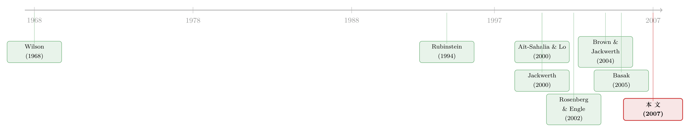

为什么从期权里「读」出来的风险厌恶，会咧嘴一笑？
本文读的是 Ziegler (2007, Review of Financial Studies)：把期权价格反推出的「状态价格密度」和历史收益估出的「信念」放在一起，本应得到一条平滑下降（甚至常数）的风险厌恶曲线，可它偏偏呈 U 形、在平值附近还会变成负数——这就是著名的「定价核之谜」。本文在标准消费基础框架里逐一审讯三位嫌疑人——偏好聚合、信念误估（随机波动率/跳跃/Peso 问题）、异质信念——结论却是：在合理参数下，没有一个能解释这个微笑。要解释它，恐怕得走出这个框架本身。
1 一条「不该笑」的曲线
先从一个看起来无害的恒等式说起。
Rubinstein (1994) 有一句话，几乎成了整条文献的地基：在一个代表性投资者经济里，偏好、主观信念、状态价格密度这三样东西，任意知道两个，第三个就被唯一地钉死了。这听上去像一句废话，却暗藏玄机——它意味着，如果我们能从市场上「读」出其中两样，就能反推出第三样。
于是，一个诱人的实证程序诞生了。期权价格是前瞻的，从一条期权隐含波动率曲面里，可以非参数地估出 状态价格密度 (state-price density, SPD)，也就是市场为「未来指数落在某个区间」这件事开出的阿罗-德布鲁价格；而把历史指数收益拿来做核密度，就得到投资者的 主观概率密度 (subjective density)。两者一比，按照那个恒等式，剩下的那一样——代表性投资者的风险厌恶 (risk aversion)——就掉了出来。
按教科书的剧本，这条曲线应该长得很乖：对一个相对风险厌恶为常数的 CRRA 投资者，它就是一条水平线；放宽一点，它至少应当处处为正、随财富温和下降。可是 Aït-Sahalia and Lo (2000)、Jackwerth (2000)、Rosenberg and Engle (2002) 三组人，各自用了略有差别的方法，却得到了同一张令人不安的脸：风险厌恶随 S&P 500 指数水平剧烈起伏，在期货价格（也就是「平值」）附近呈 U 形；更过分的是，Jackwerth (2000) 和 Rosenberg and Engle (2002) 在平值附近的一段区间里，干脆估出了负的风险厌恶。
负的风险厌恶是什么意思？它意味着，在「市场没怎么涨也没怎么跌」的那一带，投资者为多得一块钱在好状态下的支付，反而高于在坏状态下——他像个风险偏好者，专挑顺风局加注。这与任何理性定价的直觉都相悖。这条曲线本不该笑，它却咧开了嘴。这，就是后来被 Brown and Jackwerth (2004) 命名为「定价核之谜 (pricing kernel puzzle)」的东西。（关于从期权价格反推「客观概率/定价核」这件事本身有多脆弱，可参见《把概率从期权价格里「凭空」捞出来——Ross 复原定理的一次实证审判》。）
接着，一个自然的问题是：这个微笑，到底是市场在告诉我们一件关于偏好的深刻真相，还是仅仅是我们估计程序里的某个环节出了错？本文要做的，正是把这个问题在「标准消费基础框架」里掰开揉碎。
2 先把嫌疑人列清楚
恒等式里只有三样东西，错误也只可能藏在三处。本文开篇就把排查逻辑摆得很清楚。
状态价格密度，大概率是清白的。 这一点很关键，是整篇文章得以聚焦的前提。理由有三：其一，三组作者方法各异，结论却高度一致；其二，最刺眼的那部分——负风险厌恶——恰恰出现在期货价格附近，而那里正是期权最活跃、观测最多的区域，不像是数据稀疏导致的估计噪声；其三，Bliss and Panigirtzoglou (2000) 证明了 Aït-Sahalia and Lo (2000) 所用的「平滑隐含波动率」方法相当稳定。更本质的是，SPD 是从前瞻的、可观测的期权价格里得到的唯一市场价格，无论投资者信念或偏好是否同质，它都摆在那里。
把 SPD 划为「基本可信」，等于把侦查范围收缩到了另外两样：偏好与信念。本文剩下的篇幅，就是在这两条线上轮流审讯。
于是嫌疑人只剩三位：
- 偏好聚合 (preference aggregation)：市场上每个人的风险厌恶都很乖，但把异质偏好加总成一个「经济整体」的风险厌恶函数时，会不会聚合出一个古怪的形状？这种扭曲又会不会被随机波动率和跳跃放大？
- 信念误估 (misestimation of beliefs)：投资者的信念是前瞻、不可观测的，而我们却用回望的历史收益去替代它。一旦收益过程时变（随机波动率、跳跃），或者存在 Peso 问题（投资者担心一场历史样本里没出现过的崩盘），这个替代就会系统性地出错。
- 异质信念 (heterogeneous beliefs)：如果投资者根本就各执一词，那么「代表性投资者的单一信念」这个估计对象本身就不存在，硬去估它会带来多大的偏差？
文章的结论可以一句话剧透：三位嫌疑人，在合理参数下都无罪。 但有意思的不是这个结论，而是它如何被一步步逼出来——而逼供的工具，是一个把「风险厌恶」拆成两半的模型。
3 模型：把隐含风险厌恶拆成两半
本文沿用了 Basak (2005) 的异质信念框架，并额外允许总禀赋出现跳跃。我把最关键的几步推导显式地走一遍，因为整篇文章的全部锋利都来自最后那个分解式。
经济环境。 连续时间、有限期 \([0,T]\)，单一消费品，市场动态完备。有 \(I\) 个价格接受、风险厌恶的投资者 \(i=1,\dots,I\)，他们可以在信念、偏好、禀赋上各不相同。总禀赋 \(c_t\) 外生、且严格大于零，遵循
$$dc_t = \mu_t\,dt + \sigma_t\,dB_t + dJ_t$$
其中 \(B_t\) 是布朗运动，\(J_t\) 是纯跳跃过程，跳跃分布为 \(\nu_t\)、到达强度为 \(\lambda_t\)。投资者连续观测 \(c_t\)，因而能从二次变差里精确识别波动率 \(\sigma_t\)，但只能对漂移 \(\mu_t\)、跳跃强度 \(\lambda_t\) 与跳跃分布 \(\nu_t\) 做贝叶斯推断。由于先验不同，他们对这些参数的推断会始终存在分歧。每个投资者眼中，\(c_t\) 服从一个属于他自己的过程
$$dc_t = \mu_t^i\,dt + \sigma_t\,dB_t^i + dJ_t^i$$
注意：扩散参数 \(\sigma_t\) 是大家共同知道的，分歧只发生在漂移与跳跃上。
个体优化。 投资者 \(i\) 按自己的信念 \(P^i\) 最大化一生效用
$$U^i(c^i) = E^i\!\int_0^T u^i(c_t^i,t)\,dt$$
受预算约束 \(E^i\!\int_0^T \xi_t^i c_t^i\,dt \le W^i\)。用拉格朗日乘子 \(\psi_i\) 把约束拆掉，逐时逐态求一阶条件，得到那条最经典的等式
$$u_c^i(c_t^i,t) = \psi_i\,\xi_t^i$$
即边际效用正比于个体状态价格密度 \(\xi_t^i\)。
总体均衡与分歧的代价。 市场完备时，任何均衡配置都可由一个中央计划者用权重 \(\lambda_i\) 求解。把不同投资者的信念换算到投资者 1 的测度上——这里出现了本文的灵魂变量，Radon–Nikodym 导数 \(\eta_t^i = dP^i/dP^1\)，它度量了「投资者 \(i\) 相对投资者 1 有多乐观或多悲观」——一阶条件变为
$$\lambda_i\,\eta_t^i\,u_c^i(c_t^i,t) = \psi_t$$
这一步是整篇文章的分水岭。它说明：每个人的最优消费 \(c_t^i\)，不再只是总禀赋 \(c_t\) 的函数，还是全体 \(\eta_t^i\) 的函数。换句话说，在异质信念下，个体消费和总禀赋之间不再一一对应——同样的市场总量 \(c_t\)，落到每个人头上的份额，取决于此刻谁更乐观、谁更悲观。这个「不再一一对应」，正是后面所有扭曲的总根源。
由此可写出状态价格密度
$$q_{t,s}(c_s) = \frac{1}{u_c^i(c_t^i,t)}\,p_{t,s}^i(c_s)\,E^i\!\big[\,u_c^i(c^i(c_s,\eta_s^2,\dots,\eta_s^I),s)\,\big|\,c_s\,\big]$$
读它的方式很直观：一份「指数落在 \(c_s\) 附近」的索取权，其价格正比于投资者感知到的该事件概率 \(p_{t,s}^i\)，乘以他在该事件发生时的期望边际效用。这里必须用「期望」，恰恰是因为给定总量 \(c_s\)，个体消费还随 \(\eta_s\) 漂移，不是一个确定值。
关键一步：取对数导数。 对上式关于 \(c_s\) 取对数微分，得到
$$\frac{q_{t,s}'(c_s)}{q_{t,s}(c_s)} = \frac{p_{t,s}^{i\prime}(c_s)}{p_{t,s}^i(c_s)} + \frac{(d/dc_s)\,E^i[u_c^i(c^i(c_s),s)\mid c_s]}{E^i[u_c^i(c^i(c_s),s)\mid c_s]}$$
这条式子把「状态价格」「个体信念」「期望边际效用的变化率」三者扣在了一起。
最后，定义隐含风险厌恶。 现在采用文献的惯例：令股指 \(S\) 为总禀赋的代理（\(c_s=S\)），\(Q(S)\) 是从期权估出的状态价格，\(\hat P(S)\) 是我们能拿到的那个单一信念估计。隐含绝对风险厌恶估计量定义为
$$\rho(S) = \frac{\hat P'(S)}{\hat P(S)} - \frac{Q'(S)}{Q(S)}$$
把上面的对数导数式代进去，本文得到了全文最核心的分解——隐含风险厌恶，等于「真实偏好项」加上「信念误估项」：
这个分解式，就是后面三场审讯的「测谎仪」。它告诉我们一个朴素却深刻的事实：在异质信念下，隐含风险厌恶与任何一个投资者的真实风险厌恶之间，并没有直接的对应关系。 微笑可能根本不来自偏好（\(a1\)），而来自我们对信念的误估（\(a2\)）。
顺带说一句同质信念的特例：当所有 \(\eta_t^i=1\)，个体消费重新变回总禀赋的函数，状态价格密度坍缩为 \(q_{t,s}(c_s) = \dfrac{1}{u_c^i(c^i(c_t),t)}\,p_{t,s}(c_s)\,u_c^i(c^i(c_s),s)\)。此时偏好与隐含风险厌恶恢复了清晰的对应——所以「对应关系的断裂」纯粹是信念异质惹的祸，与跳跃、随机波动率、信息不完全统统无关。
4 第一审：是「众口难调」吗？
先审偏好聚合。直觉是：也许每个人的风险厌恶都规规矩矩，但加总之后涌现出一个 U 形怪物——毕竟，财富在风险厌恶不同的人之间重新分配，本就会让「经济整体」的有效风险厌恶随状态起伏。这是 Wilson (1968)、Arrow (1970)、Friend and Blume (1975) 一脉的老问题。
但分解式给出了答案：本文发现，个体风险厌恶函数的绝大多数性质，会原封不动地传导到隐含风险厌恶上。也就是说，只要个体偏好是良态的（处处正、合理下降），聚合并不会凭空制造出一个微笑。更重要的是，即便引入随机波动率与跳跃，这个结论依然成立。第一位嫌疑人，证据不足，无罪。
5 第二审：是「猜错了信念」吗？
第二条线索更有戏剧性。投资者的信念是前瞻的，而我们却拿回望的历史收益去当替身。Brown and Jackwerth (2004) 早就点过这个命门：只要收益过程时变，或者投资者预期着一些历史里没发生过的实现，历史估计就会失真。
本文先用一个具体模型来量化「时变」这条路：把 Pan (2002) 的随机波动率加跳跃模型里隐含的风险厌恶函数算出来。结果耐人寻味——它并不微笑，但它随指数水平剧烈变动，并且在高收益状态下变成负数。这说明，随机波动率与跳跃所造成的信念误估，虽然能把风险厌恶搅得面目全非，却搅不出那个标志性的 U 形。这条路，走不通。
那么，要把信念误估项 \(a2\) 弯成一个微笑，需要怎样的信念扭曲？本文从分解式反推出了那条「必需的误估模式」：基于历史收益的信念估计，必须高估了极高收益的概率、同时低估了极低收益的概率。这正是 Peso 问题 (Peso problem) 的典型指纹——投资者心里装着一场历史样本里从未兑现的崩盘，于是他们眼中的左尾，比历史数据厚得多。
于是反转出现：Peso 问题确实能产生微笑，逻辑是自洽的。可一旦把它拿去拟合 Aït-Sahalia and Lo (2000) 那条半参数 SPD，要求就崩了——为了复刻经验 SPD 那条肥厚的左尾，投资者感知到的市场崩盘概率必须大到不切实际。Bates (2000) 研究过 87 年股灾后 S&P 500 期权里的「崩盘恐惧」，但本文需要的恐惧量级，远超任何合理校准。所以 Peso 问题可以是帮凶，却当不了主谋。
6 第三审：是「各执一词」吗？
最后一位嫌疑人，恰恰是模型从一开始就为之搭好舞台的那个——异质信念。
回到第 3 节那条灵魂等式 \(\lambda_i\eta_t^i u_c^i = \psi_t\)：当投资者真的各执一词时，「代表性投资者的单一信念」这个估计对象根本不存在，我们硬用一个 \(\hat P(S)\) 去替它，分解式里的 \(a2\) 项就会被激活，把隐含风险厌恶推离真实偏好。本文证明：异质信念会对隐含风险厌恶造成显著的扭曲，而且——这一点尤其反直觉——即便你用全体投资者信念的加权平均去当那个 \(\hat P\)，扭曲依然不会消失。（信念异质如何独立于「信息质量」去搅动价格，是另一个有意思的角度，可参见《分歧本身没那么重要，重要的是「信息质量」在变》。）
那么，多大的异质性才足以解释这个微笑？本文做了一次结构性校准：用一个含三组投资者的异质信念 SPD，去拟合 Aït-Sahalia and Lo (2000) 的半参数 SPD。答案再次令人失望——要长出经验 SPD 那条肥厚的左尾、从而解释微笑，需要两组悲观投资者，且其悲观程度大到不可信。换句话说，异质信念这把刀确实锋利，但要砍出这个微笑，得把刀挥到现实中不会出现的力度。第三位嫌疑人，同样脱罪。
三审之后，本文的结论是一个干净利落的否定：在合理参数下，偏好聚合、信念误估、异质信念，没有任何一个能在标准消费基础框架内解释隐含风险厌恶的微笑。要解释它，似乎必须走出这个框架——去认真对待市场不完全、市场摩擦，以及股指未必是总禀赋的好代理这些可能性。Lochstoer (2004)、Constantinides and Duffie (1996) 这一系的工作，正指向那个方向。
7 文献脉络
把这条线索捋一捋，它的来龙去脉其实非常清晰。
最上游是理论：Wilson (1968) 的辛迪加理论、Arrow (1970) 的风险承担文集，奠定了「异质个体的风险厌恶如何聚合」的语言。真正把它引向期权实证的，是 Rubinstein (1994)——那个「三者知二推一」的恒等式，给了后人一把从价格反推偏好的钥匙。
接着是「发现谜题」的三连击：Aït-Sahalia and Lo (2000) 提出非参数隐含风险厌恶，Jackwerth (2000) 从期权与已实现收益里复原风险厌恶并撞见负值，Rosenberg and Engle (2002) 用经验定价核进一步确认了 U 形与负值。Brown and Jackwerth (2004) 则把这一现象正式命名为「定价核之谜」，并指出信念估计的前瞻/回望错配是关键嫌疑。

然后是「提供工具」的一支：Basak (2005) 的异质信念资产定价模型，给了本文搭建经济的骨架；Pan (2002) 的随机波动率加跳跃模型，被本文借来量化「时变信念」这条路；Benninga and Mayshar (2000)、Anderson, Ghysels and Juergens (2005) 则从不同角度探讨了异质性对期权定价的含义。本文 Ziegler (2007) 站在这条脉络的交汇处，做的不是「再提一个解释」，而是用同一个框架把三个最自然的解释逐一证伪，从而把谜题的边界，钉死在了标准框架之外。
评论与延伸（Q&A + 研究方向）
(a) 几个可能的疑问
Q：负的隐含风险厌恶到底荒谬在哪里，不能只当成估计噪声吗？
负风险厌恶意味着定价核在某段区间里向上倾斜——投资者愿意为好状态下的一块钱付更高的价，这与「坏状态更稀缺、更值钱」的全部资产定价直觉相悖。本文特意强调，它出现在期货价格附近，而那正是期权最活跃、观测最密的地方，因此很难简单归因于数据稀疏。这也是它被称为「谜」而非「误差」的原因。
Q：作者凭什么一上来就假设状态价格密度是可信的？万一错在 SPD 呢？
这是本文最大的前提，作者给了三条辩护：方法各异的研究结论一致、最刺眼的区域恰是观测最多处、以及 Bliss and Panigirtzoglou (2000) 对平滑隐含波动率法稳定性的检验。这是一个有意识的范围限定——作者明说了，若 SPD 估计本身有偏，那是本文框架之外的另一种解释。所以严格讲，本文证伪的是「在 SPD 可信的前提下」的三个解释。
Q：Peso 问题既然「能」解释微笑，为什么还说它不行？
区别在「定性能」与「定量可信」。Peso 问题在逻辑上确实能制造出所需的左尾扭曲，但当本文把它校准到 Aït-Sahalia and Lo (2000) 的经验 SPD 时，所需的崩盘概率大到不现实。这是一种典型的「机制成立、但量级离谱」式证伪——它没否定 Peso 问题的存在，只是说它撑不起整个微笑。
Q：异质信念这条路，为什么用「加权平均信念」也救不回来？
因为问题不在「用哪个信念」，而在「单一信念这个对象本身已不存在」。一旦个体消费与总禀赋失去一一对应（第 3 节那条等式的后果），状态价格里混入了全体 \(\eta^i\) 的信息，任何一个标量信念估计——哪怕是加权平均——都无法还原它。扭曲是结构性的，不是选错了代表。
Q：这篇论文的「贡献」是一个否定结果，这也算贡献吗？
算，而且是高质量的那种。它的价值在于收窄了搜索空间：在它之前，人们可以含糊地说「也许是聚合、也许是信念」；它之后，这三条最自然的路在标准框架内都被堵死，研究者被迫把注意力转向市场不完全、摩擦、以及股指≠总禀赋。一个把后人从死胡同里劝退的否定结果，省下的是整片文献的力气。
Q：结论对「股指是总禀赋的好代理」这个假设有多敏感？
高度敏感，作者本人也坦承这是软肋。股指有随机波动率，而总消费近乎同方差 [Lochstoer (2004)]，两者的随机过程根本不同。一旦股指不是总禀赋的好代理，基于股指推出的偏好就会被扭曲——这恰恰是作者在结论里推荐的「下一个嫌疑人」。
(b) 几个可能的研究问题与提案
1. 把这套「分解式审讯法」搬到公司债的定价核上。 【经济故事】股票期权有定价核之谜，那么信用市场呢？从公司债期权或 CDS 期权里估出信用状态价格密度，再与历史违约/利差分布比对，隐含的「信用风险厌恶」会不会也微笑？若会，本文的三审框架（聚合/信念误估/异质信念）能否照搬？ 【可行性】中。CDS 期权与公司债期权数据较薄，SPD 的非参数估计在尾部尤其不稳；但可先在指数层面（CDX 期权）做，识别策略沿用本文的分解式，doable 但对数据质量要求高。
2. 用外资持有人的进出，给「异质信念」找一个外生变量。 【经济故事】本文说异质信念会扭曲隐含风险厌恶，但「异质性」难以独立观测。外资持有人在崩盘概率上的信念，往往系统性地异于本地投资者；当一国对外资开放度发生离散变化时，市场信念的异质性会被外生地搅动。 【可行性】中。需要跨国期权数据 + 资本市场开放事件（可投资度变化），用双重差分看 SPD 左尾厚度与隐含风险厌恶曲率的变化。（与《外资真是「蝗虫」吗？》的识别思路相通。）识别可信，但需找到信念异质性的干净代理。
3. 把「Peso 问题」与流动性溢价分离开。 【经济故事】经验 SPD 的肥厚左尾，可能一部分来自崩盘恐惧（Peso），一部分来自危机时的流动性溢价——两者都让深度虚值看跌期权变贵。本文把全部左尾归给信念，但流动性可能冒充了崩盘概率。 【可行性】高。用期权市场的做市商库存/价差作为流动性代理，在 SPD 的尾部回归里把流动性那一块剥离出来，看「真·崩盘概率」需求是否回落到可信区间。数据（OptionMetrics + 做市商指标）可得，识别清晰。
4. 隐含风险厌恶微笑的时变与危机。 【经济故事】微笑的「弧度」会不会随宏观状态呼吸？平静期与危机期，定价核向上倾斜的那段是变宽还是消失？这能直接检验「信念误估 vs 真实偏好」哪个主导——若弧度随波动率制度切换，更像信念误估。 【可行性】高。用长样本 S&P 500 期权逐月估 SPD 与隐含风险厌恶，按 VIX 制度分组对比。纯实证，doable。（与《定价核的两副面孔》的条件化思路一脉相承。）
参考文献
- Aït-Sahalia, Y., and A. W. Lo (2000). Nonparametric Risk Management and Implied Risk Aversion. Journal of Econometrics 94, 9–51.
- Anderson, E. W., E. Ghysels, and J. L. Juergens (2005). Do Heterogeneous Beliefs Matter for Asset Pricing? Review of Financial Studies 18, 875–924.
- Arrow, K. J. (1970). Essays in the Theory of Risk-Bearing. North-Holland, Amsterdam.
- Basak, S. (2005). Asset Pricing with Heterogeneous Beliefs. Journal of Banking and Finance 29, 2849–2881.
- Bates, D. S. (2000). Post-’87 Crash Fears in the S&P 500 Futures Option Market. Journal of Econometrics 94, 181–238.
- Benninga, S., and J. Mayshar (2000). Heterogeneity and Option Pricing. Review of Derivatives Research 4, 7–27.
- Bliss, R. R., and N. Panigirtzoglou (2000). Testing the Stability of Implied Probability Density Functions. Working Paper 114, Bank of England.
- Brown, D. P., and J. C. Jackwerth (2004). The Pricing Kernel Puzzle: Reconciling Index Option Data and Economic Theory. Working Paper, University of Wisconsin at Madison and University of Konstanz.
- Constantinides, G. M., and D. Duffie (1996). Asset Pricing with Heterogeneous Consumers. Journal of Political Economy 104, 219–240.
- Friend, I., and M. E. Blume (1975). The Demand for Risky Assets. American Economic Review 65, 900–922.
- Jackwerth, J. C. (2000). Recovering Risk Aversion from Option Prices and Realized Returns. Review of Financial Studies 13, 433–451.
- Lochstoer, L. (2004). Expected Returns and the Business Cycle: Heterogeneous Agents and Heterogeneous Goods. Working Paper, University of California, Berkeley.
- Pan, J. (2002). The Jump-Risk Premia Implicit in Options: Evidence from an Integrated Time-Series Study. Journal of Financial Economics 63, 3–50.
- Rosenberg, J. V., and R. F. Engle (2002). Empirical Pricing Kernels. Journal of Financial Economics 64, 341–372.
- Rubinstein, M. (1994). Implied Binomial Trees. Journal of Finance 49, 771–818.
- Wilson, R. (1968). The Theory of Syndicates. Econometrica 36, 119–132.
- Ziegler, A. (2007). Why Does Implied Risk Aversion Smile? Review of Financial Studies 20(3), 859–904.